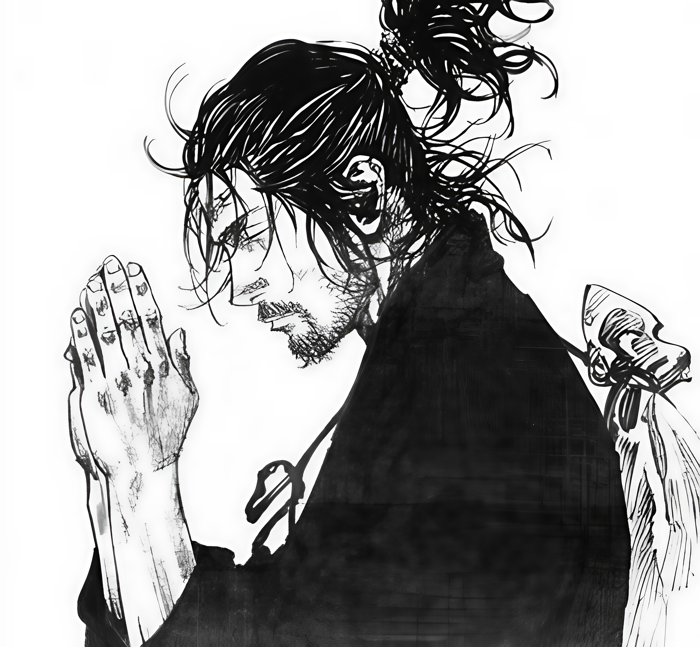

"Preocupant-te d'una sola fulla no veuràs l'arbre. Preocupant-te d'un sol arbre, no veuràs el bosc sencer.
Veu tot íntegrament, esforçament, aquest és el veritable significat de veure." - Takuan

Que és Vagabond?
Vagabond és una sèrie de màniga èpica d'arts marcials escrita i dibuixada per Takehiko Inoue. Relata la història del guerrer més famós del Japó, Musashi Miyamoto, basant-se en Musashi, la novel·la escrita per Eiji Yoshikawa. El manga va començar el 1998 sent serialitzat a la revista setmanal Shukan Moningu i és publicat per Kōdansha a Japó. A Espanya, Finlàndia i Argentina és publicat per l'editorial Ivrea. Porta un total de 37 toms. Vagabond ha venut més de 82 milions de còpies arreu del món, convertint-se en una de les 20 sèries de màniga més venudes de la història.